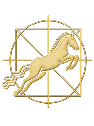

Your horse’s X-ray isn’t a ruler.
Researchers in Vienna measured 13 standard hoof dimensions on six front feet by X-ray and by CT. The X-ray values ran systematically higher: about 6% on average (3.59 mm, roughly 1/8 inch, at a 1 m source distance), with single measures up to almost 40% (Anatomia, Histologia, Embryologia, 2026).
A second, independent study (Equine Veterinary Education, 2022; 24 unshod feet) changed only where the beam was centered: the coronary band or the ground surface. Palmar angle and sole thickness both changed with it.
Next set of films, ask:
Is a marker in the image?
Is the setup (distance, where the beam is aimed) the same as last time?
The Vienna authors’ advice: compare relative values, not absolute ones, across methods.
Same setup + a marker in the frame = films you can compare.
Follow Precision Equine HealthThat was a little snack. For the full meal, follow us on Facebook. Small studies: the first used six cadaver feet; neither tested shoeing or treatment decisions, and neither says any film was read wrong. We measure; your veterinarian diagnoses. Sources: Sellke L, Ludewig E, Handschuh S, Witter K, Anat Histol Embryol 2026;55:e70073, doi:10.1111/ahe.70073 · Staples E, Porter E, Mendoza P, Trolinger-Meadows K, Colee J, Morton A, Equine Vet Educ 2022;34(11):581, doi:10.1111/eve.13554. Footage via Pexels: Anastasia Shuraeva, khezez, Ebahir, Tima Miroshnichenko, Olha Lytvynenko. Build PP015-v1.0.